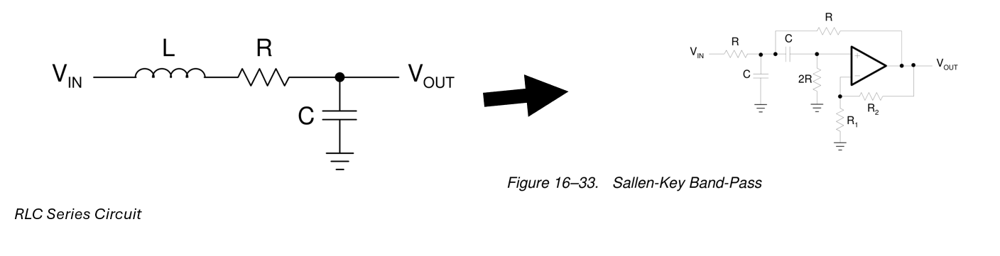

Modifications
With the continuous development of devices to be more efficient while reducing their bulky nature, we decided to replace the RLC circuit with a band-pass active filter as our contribution to our research. This choice is due to the bulky nature of the inductor, parasitic noise introduced by larger inductances, and the need for functionality for any frequency range, tradeoffs not considered in the paper.
The second-order transfer functions for each model is compared, specifically their voltage step responses, a reflection of the existing charge in the system as seen in the traditional KVL based equation for RLC Series circuits in the paper. We also revised the model diagram from a passive RLC configuration to a band-pass active filter using a Sallen-Key topology as seen below.
